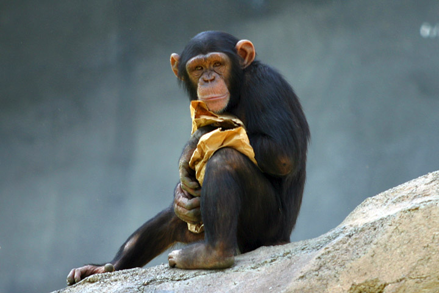

Ismerkedjen meg lakóinkkal!
Háziállatok
 |
| 🐐 Házi kecske 🐐 |
|---|
| Capra aegagrus hircus |
| 🐰 Házi nyúl 🐰 |
|---|
| Oryctolagus cuniculus var. domestica |
| 🐓 Házi tyúk 🐓 |
|---|
| Gallus gallus domesticus |
| 🐑 Juh 🐑 |
|---|
| Ovis aries |
| 🐄 Közönséges szarvasmarha 🐄 |
|---|
| Bos taurus taurus |
| 🐎 Ló 🐎 |
|---|
| Equus caballus |
Hüllők
 |
| 🐍 Erdei csörgőkígyó 🐍 |
|---|
| Crotalus horridus |
| 🐢 Indiai csillagteknős 🐢 |
|---|
| Geochelone elegans |
| 🐊 Nílusi krokodil 🐊 |
|---|
| Crocodylus niloticus |
| 🦎 Zöld gyík 🦎 |
|---|
| Lacerta viridis |
Vizi emlősök
| 🦭 Antarktiszi medvefóka 🦭 |
|---|
| Arctocephalus gazella |
 |
| 🦫 Eurázsiai hód 🦫 |
|---|
| Castor fiber |
| 🦦 Európai vidra 🦦 |
|---|
| Lutra lutra |
 |
| 🐬 Palackorrú delfin 🐬 |
|---|
| Cursiops truncatus |
Szárazföldi emlősök
 |
| 🐻 Barnamedve 🐻 |
|---|
| Ursus arctos |
| 🦌 Gímszarvas 🦌 |
|---|
| Cervus elaphus |
|  |
| 🐒 Közönséges csimpánz 🐒 |
|---|
| Pan troglodytes |
| 🐅 Tigris 🐅 |
|---|
| Panthera tigris |
| 🐗 Vaddisznó 🐗 |
|---|
| Sus scrofa |
| 🦊 Vörös róka 🦊 |
|---|
| Vulpes vulpes |
Madarak
| 🦢 Bütykös hattyú 🦢 |
|---|
| Cygnus olor |
| 🦚 Kék páva 🦚 |
|---|
| Pavo cristatus |
| 🦉 Uhu 🦉 |
|---|
| Bubo bubo |